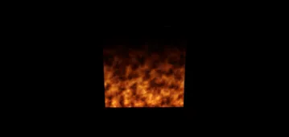

3D > Material & Texture > Noise Texture > SimplexTexture
Custom SimplexTexture - Fire - RedGPU WebGPU Example
Custom texture example creating a fire effect using Simplex Noise.
심플렉스 노이즈를 활용하여 불꽃 효과를 연출하는 커스텀 텍스처 예제입니다.

3D > Material & Texture > Noise Texture > SimplexTexture
Custom texture example creating a fire effect using Simplex Noise.
심플렉스 노이즈를 활용하여 불꽃 효과를 연출하는 커스텀 텍스처 예제입니다.
